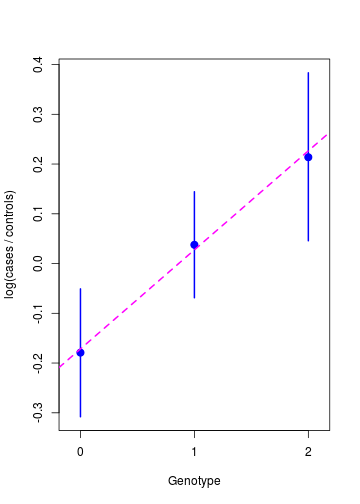

Damjan Vukcevic
University of Melbourne
Transform outcome probabilities onto the log odds scale: \[\mathrm{logit}(p) = \log\left(\frac{p}{1-p}\right)\]
Such a transformation is called a link function
\(Y_i\) is binary outcome variable (taking values 0 or 1)
\(X_i\) is a predictor variable
Logistic regression model: \[p_i = \Pr(Y_i = 1 \mid X_i)\] \[\mathrm{logit}(p_i) = \mu + \beta X_i\]
\(Y_i\) is binary outcome variable (taking values 0 or 1)
\(X_i\) is a predictor variable
Logistic regression model: \[p_i = \Pr(Y_i = 1 \mid X_i)\] \[\mathrm{logit}(p_i) = \mu + \beta X_i\]
Notes:
The observations \(Y_i\) are assumed to be independent (conditional on \(X_i\))
The logit function 'links' the original scale (of the outcome variable) with the modelling scale (of the linear predictor), ensuring all predictions give valid probabilities
Re-write the model: \[\begin{aligned} \mathrm{logit}(p_i) &= \mu + \beta X_i \\ \Rightarrow \quad \frac{p_i}{1 - p_i} &= e^{\mu + \beta X_i} \end{aligned}\]
Consider binary \(X_i \in \{0, 1\}\) \[X_i = 0 \quad \Rightarrow \quad \frac{p_i}{1 - p_i} = e^{\mu} \phantom{e^{\beta}}\] \[X_i = 1 \quad \Rightarrow \quad \frac{p_i}{1 - p_i} = e^{\mu} e^{\beta}\]
\(e^{\mu}\) is the baseline odds
\(e^{\beta}\) is the odds ratio (OR), and \(\beta\) is the log odds ratio
Logistic regression: \[\mathrm{logit}\left(\Pr\left(Y_i = 1\right)\right) = \mu + \beta X_i\]
Linear regression: \[Y_i = \mu + \beta X_i + \epsilon_i\] \[\epsilon_i \sim \mathrm{N}(0, \sigma^2)\]
Differences:
The likelihood is a product of mass functions of Bernoulli random variables: \[L(\mu, \beta) = \prod_i p_i^{y_i} (1 - p_i)^{1 - y_i}\]
The parameters and predictor variables are hidden away inside the \(p_i\) terms, \[p_i = \frac{e^{\mu + \beta X_i}}{1 + e^{\mu + \beta X_i}}\]
Maximise the likelihood using the iteratively reweighted least squares (IRLS) method
Estimation and testing then follow the same as for linear regression...
Parameter estimates from maximum likelihood
Standard error from the Fisher information matrix
Example: \[\begin{aligned} \hat\mu &= -5.5 &(\textrm{s.e. }\: 0.84) \\ \hat\beta &= 0.038 &(\textrm{s.e. }\: 0.0063) \end{aligned}\]
Easier to interpret as an odds ratio: \[\textrm{OR} = e^{\hat\beta} = 1.04\]
Can also calculate a confidence interval for the OR: \[\textrm{95% CI} = e^{\hat\beta \pm 2 \mathrm{se}(\hat\beta)} = (1.03, 1.05)\]
Standard likelihood theory: estimates are asymptotically unbiased, efficient and normally distributed
Usually interested in tests of effect parameters, for example: \[\begin{cases} H_0\colon \: \beta = 0 \\ H_1\colon \: \beta \ne 0 \end{cases}\]
Use a likelihood ratio test to carry this out:
Usually interested in tests of effect parameters, for example: \[\begin{cases} H_0\colon \: \beta = 0 \\ H_1\colon \: \beta \ne 0 \end{cases}\]
Use a likelihood ratio test to carry this out:
Example: \[\textrm{p-value} = 2.5 \times 10^{-12}\]
Can add more predictor variables, the same as for linear regression:
Estimation and hypothesis testing is analogous to linear regression
Case-control studies: only ORs are estimable
Logistic regression: estimates ORs
A perfect match!
Case-control studies: only ORs are estimable
Logistic regression: estimates ORs
A perfect match!
(Note: this is a property of the logit link function)
Example: genome-wide association studies (GWAS)
Consider a study with 1000 cases and 1000 controls
For individual \(i\):
Consider a study with 1000 cases and 1000 controls
For individual \(i\):
Example data:
| \(G = 0\) | \(G = 1\) | \(G = 2\) | |
|---|---|---|---|
| \(Y = 0\) (controls) | 360 | 468 | 172 |
| \(Y = 1\) (cases) | 301 | 486 | 213 |
\[\mathrm{logit}(p_i) = \mu + \beta G_i\]
Each copy of the allele increase the log odds of disease by \(e^{\beta}\)
This model underlies the vast majority of analyses
\[\mathrm{logit}(p_i) = \mu + \beta G_i\]
Each copy of the allele increase the log odds of disease by \(e^{\beta}\)
This model underlies the vast majority of analyses
\[\mathrm{logit}(p_i) = \mu + \beta_1 \mathrm{I}(G_i = 1) +
\beta_2 \mathrm{I}(G_i = 2)\]
The heterozygote OR is \(e^{\beta_1}\) and the homozygote OR is \(e^{\beta_2}\)
Here, the genotype is treated as categorical

Parameter estimates: \[\begin{aligned} \hat\mu &= -0.17 &(\textrm{s.e. }\: 0.071) \\ \hat\beta &= 0.20 &(\textrm{s.e. }\: 0.063) \end{aligned}\]
\[\begin{aligned} \textrm{OR} &= e^{\hat\beta} = 1.22 \\ \textrm{95% CI} &= (1.08, 1.38) \end{aligned}\]
Association test: \[\begin{cases} H_0\colon \: \beta = 0 \\ H_1\colon \: \beta \ne 0 \end{cases}\]
\[\textrm{p-value} = 0.0017\]
NOT 'genome-wide significant'
Can easily add covariates:
\[\mathrm{logit}(p_i) = \mu + \beta X_i + \mathbf{\gamma Z} \]
For example: sex, ethnicity, principal components,...
Inference and testing follows similarly